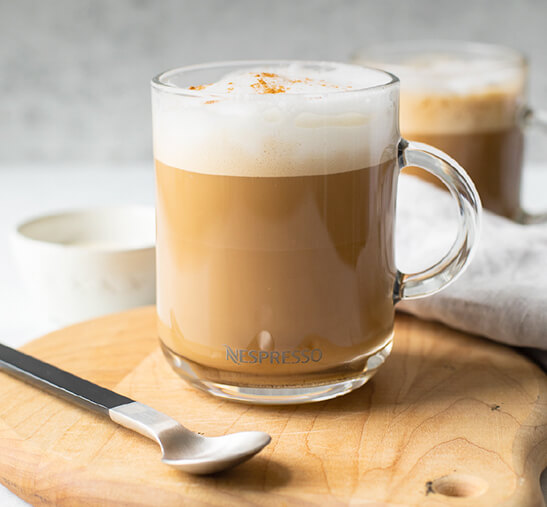

Cafe
-
Cafe expresso

Cafe con un contenido concentrado de cafeina, no recomendado para cardiacos
10.000GS
-
Cafe cortado
Cafe cortado con leche, puede elegir entre leche entre las siguientes opciones
- Leche entera
- Leche descremada
- Leche de almendras
- Leche de avena
12.000GS
-
Cafe descafeinado

Opcion sin cafeina, puede ser puro o cortado con leche
12.000GS